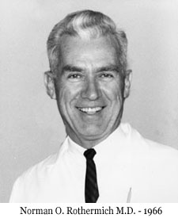

History
The Columbus Medical Research Foundation (CMRF) was founded in 1957 by Norman O. Rothermich MD and was under his leadership for the first 28 years. The purpose of the CMRF is (1) to engage in, foster, and encourage basic and clinical research and (2) to receive and administer funds for charitable, scientific, and educational purposes - primarily in the field of rheumatology.
During the period from 1957 through the early 1990's, the CMRF received some donations, but its primary financial support was in the form of grants issued by various pharmaceutical companies. These grants provided funding for the CMRF to conduct clinical trials and drug studies for arthritis and rheumatism using the newly-developed treatments by these companies. Dr. Rothermich established, at the same time, a clinic located at the Columbus Medical Center (1211 Dublin Rd, Columbus, OH) for indigent patients suffering from arthritis and other auto-immune diseases. The physicians there, including Norman O. Rothermich, MD, Waldemar J. Bergen MD, Vol K. Phillips MD, Marvin H. Thomas MD, and Sterling Hedrick MD, agreed to donate their time and expertise every Thursday afternoon to administer professional care for these people. The drugs were provided by the pharmaceutical companies. Hence, the indigent patients received state-of-the-art treatment at the relatively low cost of $2 per patient. These patients were referred by their family doctors and came from all over Ohio, many from Portsmouth and Jackson and the Appalachian areas. At one time, this clinic cared for over 150 patients.
From these clinical trials and drug studies came many anti-inflammatory drugs for the treatment of Rheumatoid Arthritis, Osteoarthritis and other types of arthritis. Some of those drugs are as follows:
- Tometin
- Apazone
- Indocin (Dr. Rothermich was known as the 'Father of Indocin')
- Feldene
- Penacillamine
- Motrin
- Methotrexate
- Auranofin
Dr. Rothermich was known worldwide for his work in the field of arthritis and rheumatism. He lectured the world over, received honorary memberships in four foreign scientific societies (India, Argentina, Japan, Portugal), authored or co-authored over 80 publications. He founded the CMRF and the Columbus Medical Center. Dr. Rothermich also founded the Central Ohio Chapter of the Arthritis Foundation. And he served as President of the Columbus Medical Association. In addition to his successful private medical practice, he was a full professor at The Ohio State University, where he founded the Division of Rheumatology. He was the personal physician of Ohio Governor James A. Rhodes and accompanied him and his entourage twice on trade missions to China, just after China opened its doors to the world in the late seventies. He was recognized for his accomplishments in the fields of arthritis and rheumatism by a special resolution/commendation issued by the General Assembly of the State of Ohio. And he was listed in the Who's Who and in the Columbus Unforgetables. Dr. Rothermich died in 1985.
Columbus Medical Research Foundation circa 1962 - Original Board Members - Starting at the top end of the table and moving clockwise: Norman O. Rothermich MD, Unknown, Floyd Turner, James Lingo, Richard Fulton MD, Emmerich von Haam MD, Unknown, Glenn Williams.
Today
After the death of Dr. Rothermich, the CMRF no longer had his dynamic leadership and, at the same time, the way that pharmaceutical research was conducted had changed as well. As a result, the pharmaceutical companies no longer offered grants to the CMRF. In the middle 1990's, under the leadership of Dr. Rothermich's son, F. Donald Rothermich, who first became Chairman in 1995, the CMRF became more proactive and established its own grant program. Then, Mr. Rothermich suggested to the Board that annual grants of $1,000 to $10,000 be offered to support research and education, primarily in the fields of arthritis and rheumatism, thereby allowing the CMRF to remain dedicated to the original purpose of the founder. Much of the funding for this grant program has come annually from the Glenn Williams Foundation (an original board member) and Marybelle Williams Foundation (Glenn's spouse) and also from a generous donation from the estate of Lottie C. Lieberman.